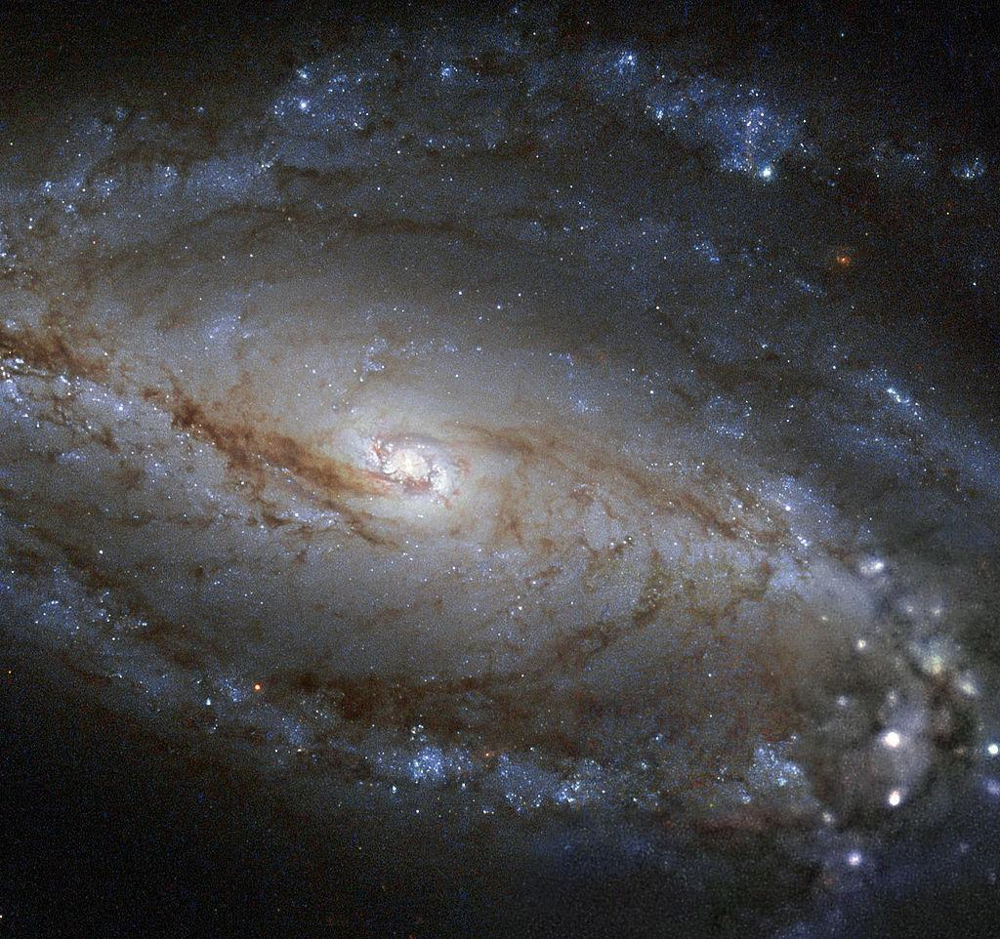

NGC 613, a gorgeous barred spiral
- Name: NGC 613 = ESO 413-011 = AM 0132-294 = MCG -05-04-044 = VV 824 = PGC 5849
- RA: 01 34 18.2
- Dec: -29° 25' 06"
- Type: SB(rs)bc
- Size: 5.5'x4.2'
- P.A.: 120°
- Mag: V = 10.1, B = 10.7
William Herschel discovered NGC 613 on 9 Dec 1798 and recorded "considerably bright, elongated north-preceding/south-following, 5 or 6' long, 1 1/2' broad, a nucleus in the middle. A pretty considerable star is about 3' north of it, and a little following." This bright barred-spiral is the 10th most southerly galaxy discovered by Herschel and is located 38' NW of mag 5.7 Tau Sculptor. It has been compared in structure to better known barred spirals NGC 7479 and NGC 1097, but yet this galaxy seems overlooked by amateurs.
The galaxy hasn't been ignored by professionals -- NED has 332 references. NGC 613 lies at a distance of ~65 million light years, spans ~100,000 light years and contains an active Seyfert nucleus.
The 2004 paper "Double-barred galaxies" (A&A, 415, 941) writes, "Suggested as double-barred by Jungwiert et al. (1997), using their H-band image. Inspection of WFPC2 images reveals a pronounced and very elliptical nuclear ring with strong star formation, having the same size, ellipticity, and orientation as the suggested inner bar. A 1996 radio study concluded "NGC 613 is a barred spiral galaxy with an active hot spot nucleus, a radio jet and a circumnuclear radio ring; there is some evidence for an accelerated collimated outflow."
Finally, the 2002 study "Near-Infrared and Optical Morphology of Spiral Galaxies" (ApJS, 143, 73) writes "SB(r)bc: Bright nuclear point source. Nuclear bar aligned with elliptical bulge and large normal bar. Fairly highly inclined disk. Two bright arms emerge from the ends of the bar, with many bright knots near the bar ends. SE arm wraps loosely to the NE. NW arm wraps tightly to the SW and forms an inner disk ring. Several other, lower surface brightness arms emerge from the ring."
My first view was 36 years ago in 1981 using a C-8. My notes read, "faint, moderately large, diffuse, small bright core. *A mag 9 star lies 2.5' NE." The bar was first seen using my 17.5-inch in 1993, as well as the initial part of the southern spiral arm, which emerges at the southeast end of the bar.
As you would expect, the view improves with aperture as well as latitude, and from Australia NGC 613 was a superb showpiece in a 30-inch two years ago! These notes were taken at 303x.
"The bright central bar region is oriented NW-SE and extends ~2.5'x1' with the halo and arms stretching ~5'x3.6'. The central region is sharply concentrated with a very intense core that increases to a bright stellar nucleus. A prominent spiral arm is easily visible on the southeast end. It has a well defined edge and a high contrast as it emerges from the central region and unfurls east and north. The arm then dims but can be followed as it bends backwards on the east side towards the northwest! The arm dims out before reaching a mag 9.6 star 2.2' NE of center. A second bright, well-defined arm is attached on the northwest end and curls south on the west end of the halo."
GIVE IT A GO AND LET US KNOW!
